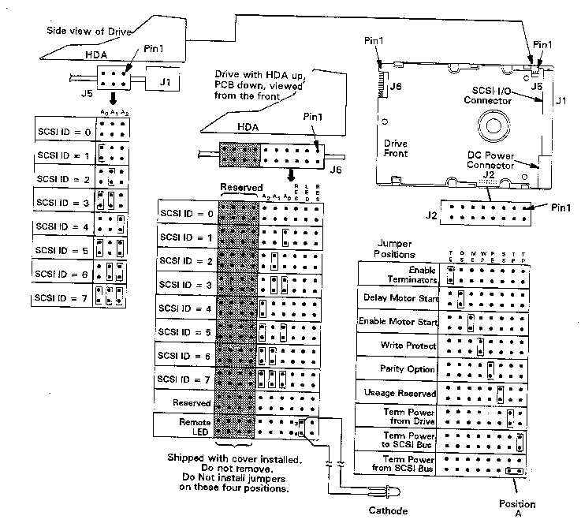

Caution
The drive options can be selected using Table 1. The drive SCSI ID (address) is set on J6 (see the following Figure). Table 1 shows the pin-sets for the options available with the A3349A 3.5-inch hard disk drive. The actual settings depend upon the system in which the disk drive is installed and its location within that system. See your service manual or CE handbook for specific configuration and jumper setting information.
Tables 2, 3, und 4 provide functional descriptions of the jumper settings for connectors J2, J5, and J6, respectively.
Apin-set is either shorted (with a jumper installed) or open (without a jumper). The option settings are shown in the following Figure.
| Function | Connector | Pin-Set |
| Term Power from SCSI Bus | J2 | 1-3* |
| Term Power to SCSI Bus | J2 | 1-2 |
| Term Power from Drive | J2 | 3-4 |
| Reserved | J2 | 5-6 |
| Parity Option | J2 | 7-8 |
| Write Protect | J2 | 9-10 |
| Enable Motor Start | J2 | 11-12 |
| Delay Motor Start | J2 | 13-14 |
| Enable Terminators | J2 | 15-16 |
| SCSI ID 0 | J5 | 5-6 |
| SCSI ID 1 | J5 | 3-4 |
| SCSI ID 2 | J5 | 1-2 |
| Reserved | J6 | 1-2 |
| Remote LED | J6 | pin 3 = anode |
| pin 4 = cathode | ||
| Reserved | J6 | 5-6 |
| SCSI ID 0 | J6 | 7-8 |
| SCSI ID 1 | J6 | 9-10 |
| SCSI ID 3 | J6 | 11-12 |
| Reserved | J6 | 13-20 |
*See following Figure for detailsTable 1:A3349A Jumpers

Figure 1: A3349A 2-GB Drive ID and Option Header (MFG #ST31230N)
| Jumper | Jumper | Jumper Function Description |
| TP(Pins 3-4) | TP(Pins 1-2) | |
| Off | Off | No terminator power is connected to drive terminators or SCSI bus I/O pin 26. |
| On | Off | Drive supplies its own terminator power only. |
| Off | On | Drive supplies power to I/O pin 26 of SCSI bus, none to internal terminators. |
| On | On | Drive supplies terminator power to itself (internal connection) and to I/O pin 26 of SCSI bus. |
| TP Position A | TP Position A | |
| On | This horizontally positioned jumper across the two TP positions nearest the PCB edge connects terminator power from SCSI bus I/O pin 26 to the drive's internal terminators. (For single-ended only.) Set if it is the last device on the bus. | |
| RES | RES | |
| Off | Reserved | |
| PE | PE | |
| On | Parity checking and parity error reporting by the drive is enabled. | |
| Off | Drive does not report result of parity checking to host. | |
| WP | WP | |
| On | Entire drive is write protected. | |
| Off | Drive is not write protected. | |
| DS | ME | |
| Off | Off | Spindle starts immediately after power up. |
| Off | On | Drive spindle does not start until Start unit command is received from host. |
| On | Off | Spindle Startup is delayed by SCSI ID times 12 seconds after power is applied, i.e. drive 0 spindle starts immediately when DC power is connected, drive 1 starts after 12-second delay, drive 2 after 24-second delay. |
| On | On | Drive spindle starts when Start Unit command is received from the ME jumper is installed. |
Table 2:A3349A Connector J2 Jumper Description
| Jumper Installation | Jumper Function Description |
| A0, A1, A2 | Drive ID on SCSI Bus (J6 may be used instead, as ID circuits on J5 and J6are in parallel. Use only one set for ID). The drive ID is binary coded positionwise; that is the jumper in position A2 is drive ID 4, the jumper in position A1 is drive ID 2, the jumper in position A0 is drive ID 1, and no jumper is drive ID 0. |
Table 3:A3349A Connector J5 Jumper Description
| Jumper Installation | Jumper Function Description |
| A0, A1, A2 | Drive ID on SCSI Bus. Either J5 or J6 (optional) may be used to select the drive ID. Both connectors should not be used at the same time; because at some time in the future, when the ID is changed, the user could fail to configure both J5 and J6 identifically. Default is ID=6. |
| LED | No jumper is ever installed. These pins are used to connect a cable for a remote LED indicator. Pin 3 (top, nearest HDA), the anode connection, connects in the drive to signal common through the emitter-collector junction of a transistor switch that controls the LED ON/OFF condition. |
| RES | Reserved usage. Do not install a jumper |
Table 4:A3349A Connector J6 Jumper Description